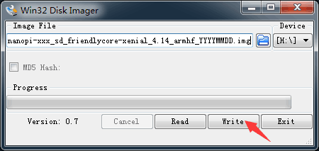
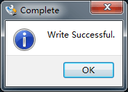
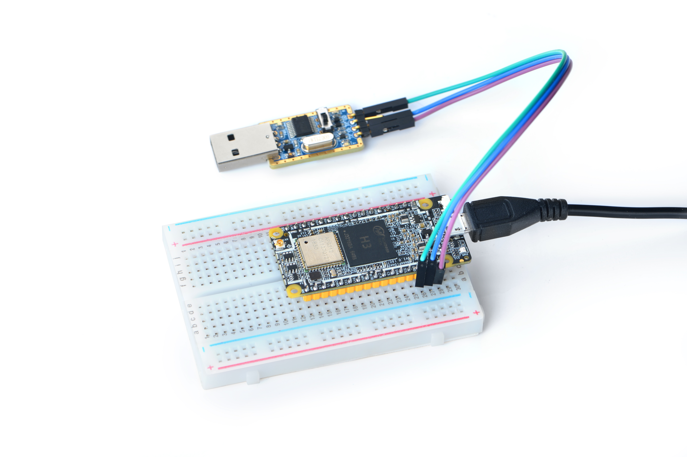

NanoPi Duo2
相关资料
- 教程（固件介绍，使用说明，操作步骤等）：http://wiki.friendlyelec.com/wiki/index.php/NanoPi_Duo2
- 系统固件下载：https://dl.friendlyelec.com/nanopiduo2
- 原理图(pdf格式)：http://wiki.friendlyelec.com/wiki/images/a/ab/Schematic_NanoPi_Duo2-V1.0-1807.pdf
- 尺寸图(dxf格式)：http://wiki.friendlyelec.com/wiki/index.php/File:Dimensions_NanoPi_Duo2_V1.0_1807_PCB.rar
-
NanoPi Duo2（以下简称Duo2）是友善之臂团队开发的一款双列直插超小型创客神器，尺寸只有55x25.4mm。它采用全志四核A7处理器H3, 配备256M/512M DDR3内存，板载WiFi 蓝牙模块，并提供OV5640摄像头接口，可运行完整的Ubuntu Core等嵌入式Linux系统。
-
NanoPi Duo2小巧精致，接口丰富，可采用USB-C直接供电，支持Micro SD卡直接启动运行系统，并可直接插入面包板使用。它引出了USB, SPI, UART, I2C, PWM, IR，音频输入与输出，百兆以太网等接口管脚，非常方便调试开发。
-
NanoPi Duo2可支持使用WiringNP, Python等编程库, 完全开源, 非常适合轻量级IoT应用开发。

引脚图

相关参数
本文档作者使用的开发板信息：
| 品牌 | FriendlyElec |
|---|---|
| 型号 | DUO2 V1.0 512M |
| CPU | Allwinner H3, Quad-core Cortex-A7 Up to 1.2GHz |
|---|---|
| DDR3 RAM | 512M |
| Connectivity | 10/100M Ethernet |
| WiFi | 802.11b/g/n |
| Bluetooth | Bluetooth V4.0 of 1, 2 and 3 Mbps. |
| Camera | OV5640 |
| Key | GPIO Key |
| USB Host | 2.54mm pin x2, exposed in 2.54mm pitch pin header |
| MicroSD Slot | 1 |
| USB-C | USB-C 2.0 DRP and power input |
| Debug Serial Interface | exposed in 2.54mm pitch pin header |
| Audio Interface | exposed in 2.54mm pitch pin header |
| GPIO1 | 2.54mm spacing 16pin. It includes UART, SPI, I2C, Audio etc |
| GPIO2 | 2.54mm spacing 16pin. It includes USB,10/100M Ethernet, IO etc |
| PCB Dimension | 25.4 x 55mm |
| Power Supply | DC 5V/2A |
| Temperature Range | -20℃ to 70℃ |
| OS/Software | U-boot，Linux-4.14 / Linux-3.4, Ubuntu 16.04.2 LTS (Xenial) |
| Weight | xxg(With Pin-headers) |
学习札记
要开启你的NanoPi Duo2新玩具，请先准备好以下硬件
- NanoPi Duo2 主板
- microSD卡/TF卡: Class10或以上的 8GB SDHC卡
- 一个microUSB接口的外接电源，要求输出为5V/2A（可使用同规格的手机充电器）
- 一台电脑，需要联网，建议使用Ubuntu 18.04 64位系统
- 一个串口模块
制作启动TF卡时，建议Class10或以上的 8GB SDHC卡。
烧录系统镜像
首先访问下载地址下载需要的固件文件(officail-ROMs目录)和烧写工具(tools目录)：
| nanopi-duo2_sd_friendlycore-xenial_4.14_armhf_YYYYMMDD.img.zip | 基于UbuntuCore构建的FriendlyCore系统固件，使用Linux-4.14内核 |
|---|---|
| nanopi-duo2_sd_friendlywrt_4.14_armhf_YYYYMMDD.img.zip | 基于OpenWrt构建的系统固件，使用Linux-4.14内核 |
烧录工具
- win32diskimager：Windows平台下的系统烧写工具
- Linux 平台下可以用dd命令烧写系统
win32diskimager-烧写到TF卡
- FriendlyCore / FriendlyWrt 等系统都属于 Linux 系统，所以它们的烧写方法是一样。
- 将 Linux 系统固件和烧写工具 win32diskimager.rar 分别解压，在 Windows 下插入TF卡（限4G及以上的卡)，以管理员身份运行烧写工具 win32diskimager，在烧写工具 win32diskimager 的界面上，选择你的TF卡盘符，选择Linux 系统固件，点击 Write 按钮烧写。
这里以nanopi-duo2_sd_friendlycore-xenial_4.14_armhf_YYYYMMDD.img为例，其他系统的烧写操作是类似的，烧写时的界面如下：

成功烧写后，会看到如下界面：

- 当制作完成TF卡后，拔出TF卡插入 BOOT 卡槽，上电启动（注意，这里需要5V/2A的供电），你可以看到STAT灯闪烁，这时你已经成功启动系统。
首次开机使用
FriendlyCore，是一个没有X-windows环境，基于Ubuntu core构建的系统，使用Qt-Embedded作为图形界面的轻量级系统，兼容Ubuntu系统软件源，非常适合于企业用户用作产品的基础OS。
本系统除了保留Ubuntu Core的特性以外，还包括以下特性：
- 集成Qt4.8；
- 集成NetworkManager网络管理器；
- 集成bluez等蓝牙相关软件包；
- 集成alsa相关软件包；
- 集成命令行系统配置工具npi-config；
- 集成Python GPIO模块RPiGPIO；
- 集成Python/C语言编写的demo程序，位于/root目录；
- 使能512M的swap分区；
运行FriendlyCore
使用USB转串口模块调试，请注意需要使用5V/2A电源给开发板MicroUSB供电：

- https://blog.csdn.net/Meissen_Zhong/article/details/113481333
- https://bbs.elecfans.com/jishu_806854_1_1.html
FriendlyCore默认帐户：
普通用户：
用户名: pi
密码: pi
Root用户：
用户名: root
密码: fa
默认会以 pi 用户自动登录，你可以使用 sudo npi-config 命令取消自动登录。
基本配置
常用命令
- 更新软件包
sudo apt-get update
连接WiFi
无论是SD WiFi还是USB WiFi, 它们的连接方式都是一样的。正基科技的APXX系列芯片属于SD WiFi，另外系统默认也已经支持市面上众多常见的USB WiFi，已测试过的USB WiFi型号如下：
| 序号 | 型号 |
|---|---|
| 1 | RTL8188CUS/8188EU 802.11n WLAN Adapter |
| 2 | RT2070 Wireless Adapter |
| 3 | RT2870/RT3070 Wireless Adapter |
| 4 | RTL8192CU Wireless Adapter |
| 5 | 小米WiFi mt7601 |
| 6 | 5G USB WiFi RTL8821CU |
| 7 | 5G USB WiFi RTL8812AU |
目前使用 NetworkManager 工具来管理网络，其在命令行下对应的命令是 nmcli，要连接WiFi，相关的命令如下：
- 切换到root账户
su root
- 查看网络设备列表
nmcli dev
注意，如果列出的设备状态是 unmanaged 的，说明网络设备不受NetworkManager管理，你需要清空 /etc/network/interfaces下的网络设置,然后重启.
- 开启WiFi
nmcli r wifi on
- 扫描附近的 WiFi 热点
nmcli dev wifi
- 连接到指定的 WiFi 热点
nmcli dev wifi connect "SSID" password "PASSWORD" ifname wlan0
请将 SSID和 PASSWORD 替换成实际的 WiFi名称和密码。 连接成功后，下次开机，WiFi 也会自动连接。
更详细的NetworkManager使用指南可参考这篇文章： Use NetworkManager to configure network settings
如果你的USB WiFi无法正常工作, 大概率是因为文件系统里缺少了对应的USB WiFi固件。对于Debian系统, 可以在Debian-WiFi里找到并安装USB WiFi芯片的固件。而对于Ubuntu系统, 则可以通过下列命令安装所有的USB WiFi固件:
apt-get install linux-firmware
一般情况下, 各种WiFi芯片的固件都存放在/lib/firmware目录下。
配置WiFi无线热点
执行以下命令进入AP模式：
su root
turn-wifi-into-apmode yes
这时会提示你输入WiFi热点的名称和密码，按提示操作即可。 操作成功后，你可以在电脑/手机上搜索并连接热点，然后通过192.168.8.1这个地址来登录开发板:
ssh root@192.168.8.1
在提示输入密码时，输入预设的密码fa，即可登入。
为了保证ssh的流畅，用以下命令关闭wifi的省电模式:
iwconfig wlan0 power off
要切换回普通的Station模式，输入如下命令：
turn-wifi-into-apmode no
扩展TF卡文件系统
第一次启动FriendlyCore系统时，系统会自动扩展文件系统分区，请耐心等待，TF卡/eMMC的容量越大，需要等待的时间越长，进入系统后执行下列命令查看文件系统分区大小：
df -h
使用蓝牙传输文件
以传输文件到手机为例进行说明，首先，将你的手机蓝牙设置为可侦测状态，然后执行以下命令开始蓝牙搜索：
hcitool scan
搜索到设备时，结果举例如下：
Scanning ...
2C:8A:72:1D:46:02 HTC6525LVW
这表示搜索到一台名为HTC6525LVW的手机，我们记下手机名称前面的MAC地址，然后用sdptool命令查看该手机支持的蓝牙服务：
sdptool browser 2C:8A:72:1D:46:02
注：上述命令中的MAC地址请替换成手机实际的蓝牙MAC地址 这个命令会详细列出手机蓝牙所支持的协议，我们需要关心的是一个名为 OBEX Object Push 的文件传输服务，以HTC6525LVW手机为例，其显示结果如下所示：
Service Name: OBEX Object Push
Service RecHandle: 0x1000b
Service Class ID List:
"OBEX Object Push" (0x1105)
Protocol Descriptor List:
"L2CAP" (0x0100)
"RFCOMM" (0x0003)
Channel: 12
"OBEX" (0x0008)
Profile Descriptor List:
"OBEX Object Push" (0x1105)
Version: 0x0100
从上面的信息可以看到，这个手机的OBEX Object Push服务的所用的频道是12, 我们需要将它传递给obexftp命令，最后发起文件传输请求的命令如下：
obexftp --nopath --noconn --uuid none --bluetooth -b 2C:8A:72:1D:46:02 -B 12 -put example.jpg
注：上述命令中的MAC地址、频道和文件名请替换成实际的
执行上述命令后，请留意手机屏幕，正常情况下手机会弹出配对和接收文件的提示，确定后就开始文件传輪了。
蓝牙常见问题：
1) 开发板上找不到蓝牙设备, 可尝试用以下命令开启蓝牙：
rfkill unblock 0
2) 提示找不到相关命令，可尝试用以下命令安装相关软件：
apt-get install bluetooth bluez obexftp openobex-apps python-gobject ussp-push
开机自动运行 Qt 示例程序
使用npi-config工具进行开启：
sudo npi-config
进入Boot Options -> Autologin -> Qt/Embedded，选择Enable然后重启即可。
开发Qt应用，参考 How to Build and Install Qt Application for FriendlyELEC Boards/zh
定制命令行的欢迎信息（文字LOGO）
修改时区
外设
-
摄像头
-
GPIO
-
IIC
-
串口
-
选择系统默认音频设备